runs / 2026-10-20 / 125716-777000-baseline-9083125d
約66分でボクセル五重塔HTMLを完成 全体書き切り失敗を分割執筆で挽回
qwen3.8-flash-next-unsloth-ud-q4_k_xl（thinking=high）が100コール・3,993秒で完走（exit 0）した。最初の全ページ一括書き出しが出力トークン上限で不発に終わったため6分割執筆に切り替え、結合・構文チェック後、ヘッドレスブラウザでのスクリーンショットと修正を往復し、52,706バイトの pagoda-garden.html を納品した。
成果物
work/pagoda-garden.html（52,706 バイト）をそのまま同梱している。重いシーンもあるため、必要なときだけ起動する。
pagoda-garden.html
51 KB · 起動するまで読み込まない
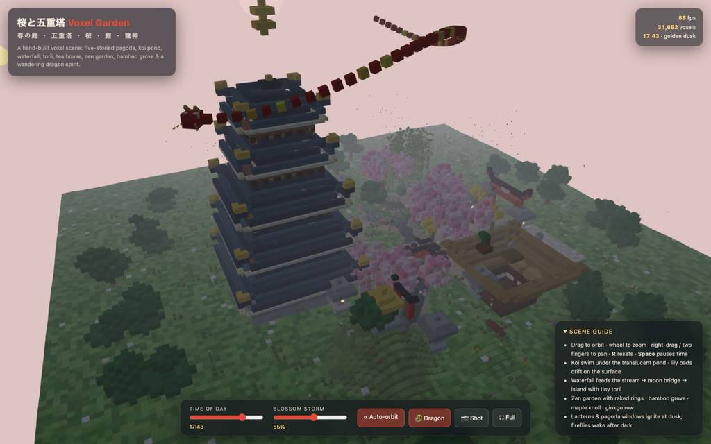
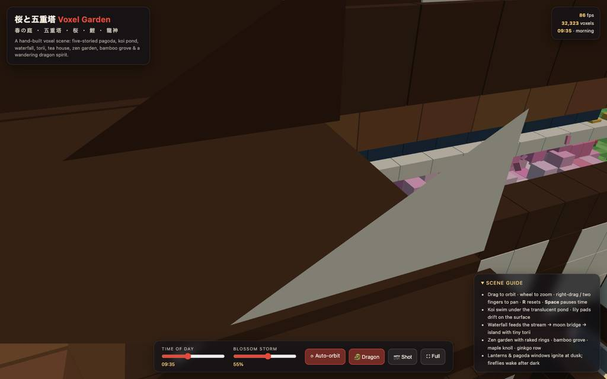
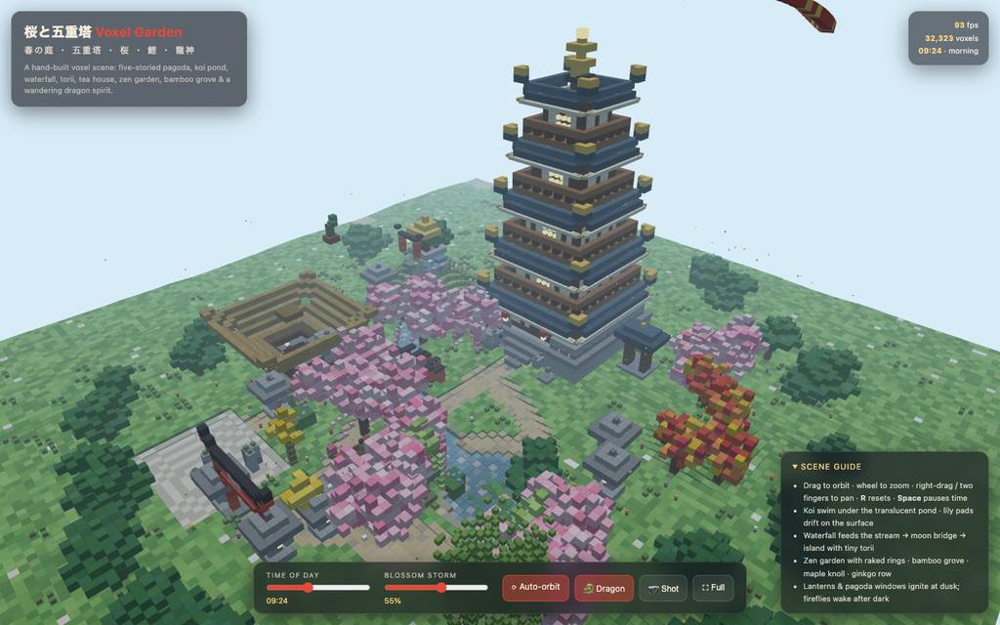
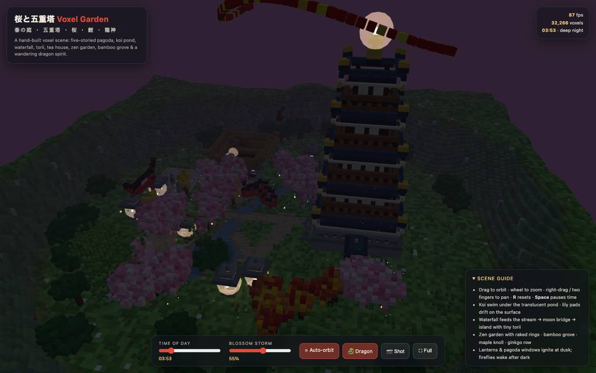
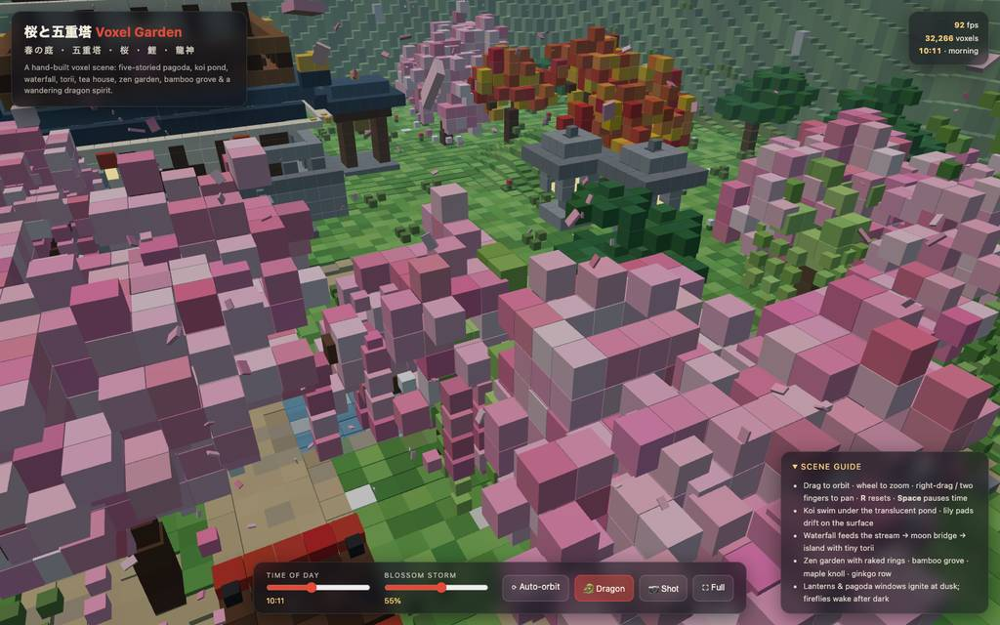
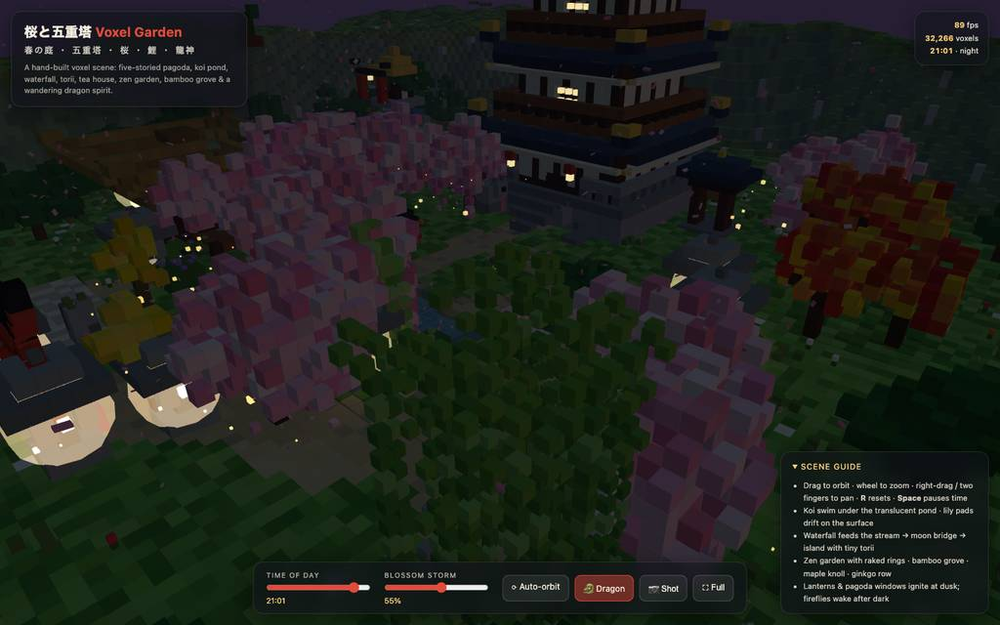
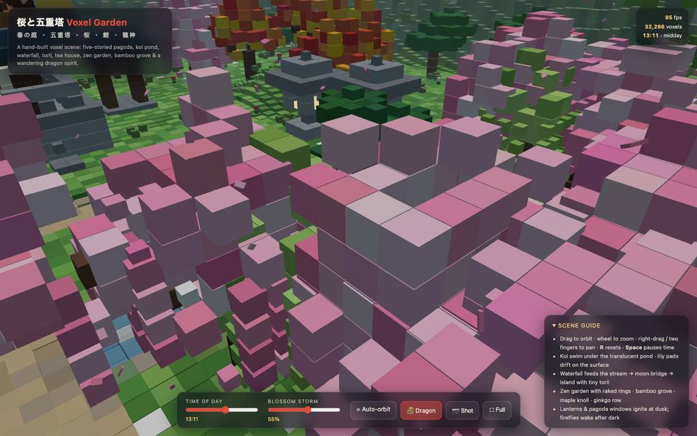
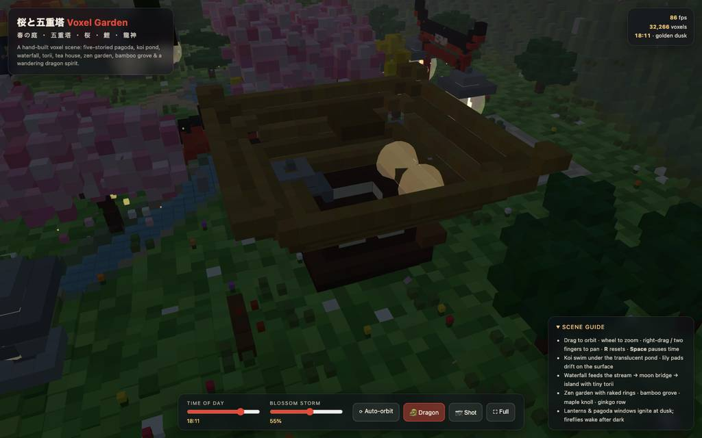
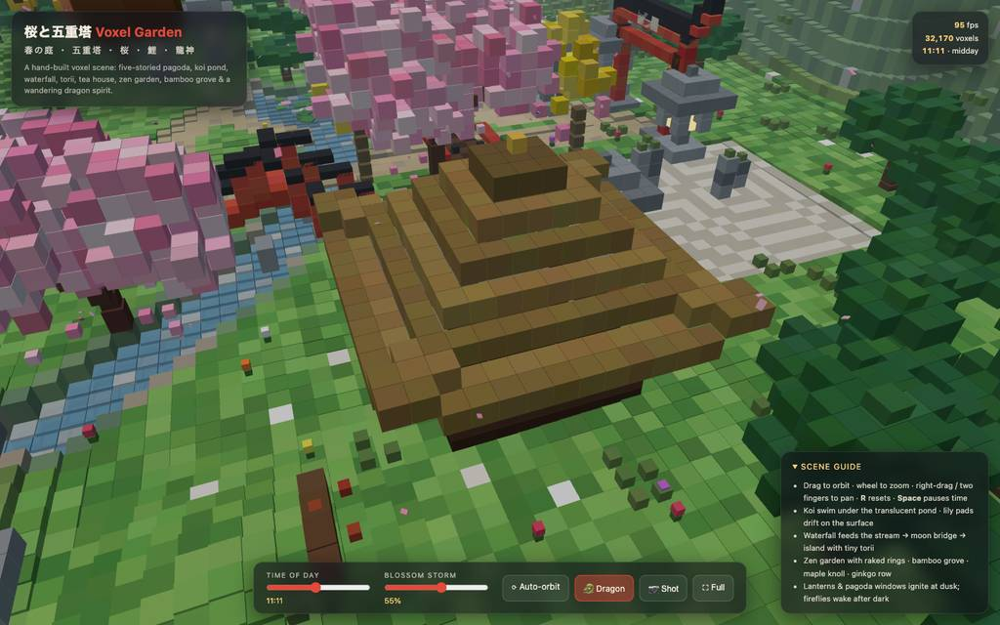
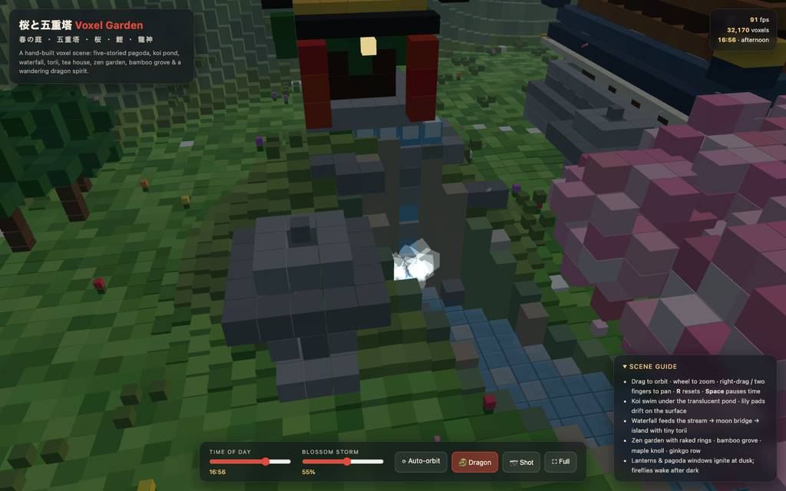
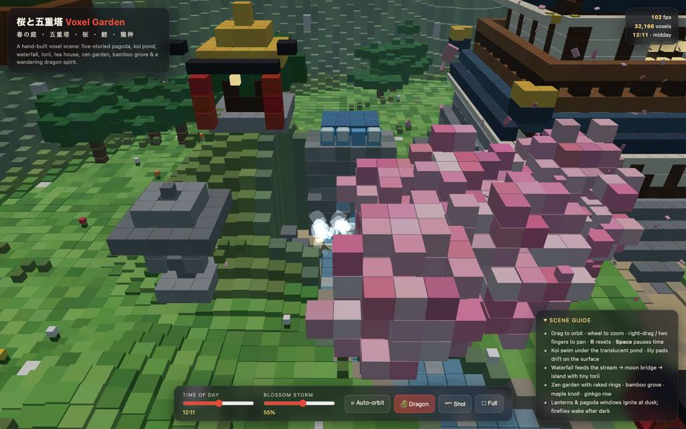
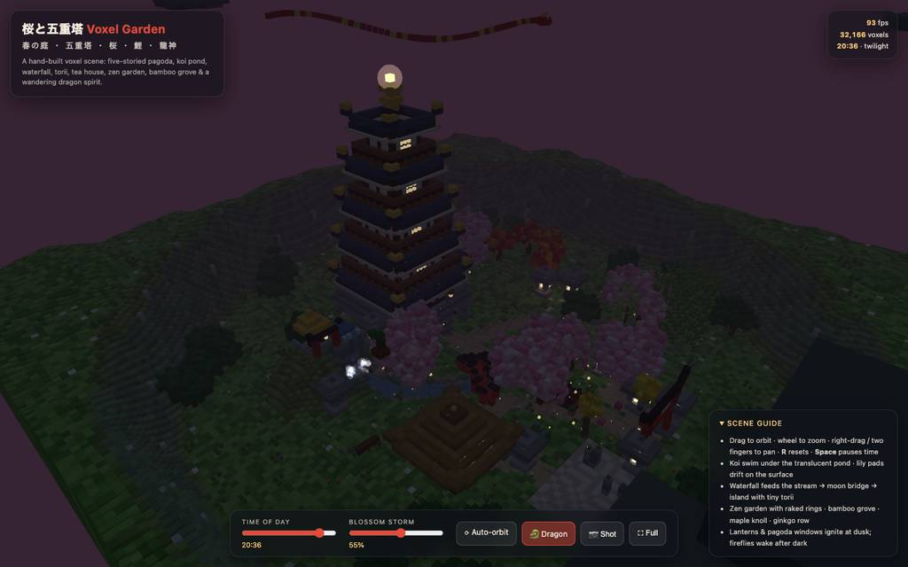
全 18 枚から等間隔に 12 枚を選んでいる。logs/events.jsonl の画像ブロックを内容ハッシュで重複排除して時系列に並べた、制作中の検証用スクリーンショット。最終版とは限らない。
成果物の構成
| 要素 | 内容 |
|---|---|
| 成果物 | pagoda-garden.html、52,706 バイトの自己完結ページ。Three.js CDN のみネット依存。最終報告で約 32,200 ボクセル・インスタンス描画 3 calls と記載 |
| 五重塔 | 石垣基壇と階段、漆喰 5 層、バルコニー 32 本柱、二重屋根 5 枚と金縁の反り、千木・金輪宝珠 |
| 水辺 | 動く池、島と小鳥居、睡蓮、断崖の滝と霧、太鼓橋と板橋、コイ 5 系統 |
| 植栽 | 桜 7 本（枝垂れ 2 含む）、カエデ 4、イチョウ並木、柳、段重ねの松、竹藪 46 本、ツツジ・紫陽花等 |
| 園内建築 | 朱の鳥居、茅葺茶室、丘の社、鐘楼、光る石灯籠 6 基、狛犬対、石亀、キノコ付き倒木 |
| 演出 | 昼夜サイクル、花弁 1,200 枚落下、52 節の竜の霊が塔の尖りを周回、色づく雲、远景の雪山と谷の縁 |
| UI・操作 | ドラブ軌道/ホイールズーム/パン、R・Space、時刻と花吹雪スライダー、自動回転・竜トグル、スクショ/全画面ボタン |
| 検証済み項目 | 昼広角、池クローズアップ、茶室、滝、20:36 の夜景を shots で確認。ES モジュールの構文チェックと 3 回リロードでの無エラーコンソールを最終報告が自己申告 |
モデルの最終メッセージから読み取った内容。コードの確認はしていない。
タイムライン
100 回の API 呼び出しを時間順に並べた。上段の帯の幅が各呼び出しの所要時間で、帯の間の空白がツールの実行時間。下段はその時点のコンテキスト長。
最も長い 2 回の生成（#3 605 秒・#2 401 秒）で 1005.4 秒、壁時計の 25.2%。出力トークンの上位 4 回（#3・#2・#1・#4）で全体の 49.5%（84,375 / 170,609）。推論以外（ツール実行など）は約 537 秒（13%）。
フェーズ別の内訳
| フェーズ | 経過 | 所要 | 全体に占める割合 | 呼び出し | 出力 tok | 何をしたか |
|---|---|---|---|---|---|---|
| 全体書き出し試行 | 0:00–21:47 | 1307 秒 | 32.7% | 3 | 71,878 | bash でワークスペースを確認後、#2〜#3 で HTML を一括書き出し。#3 は出力 32,768 トークンで上限に達し、書き込み引数の切り詰めが理由で実行不採用となった（E1）。 |
| 分割書き込み | 21:47–31:26 | 579 秒 | 14.5% | 6 | 32,642 | 方針を転換し、コードを 6 チャンク（シェル/地形/建築/樹木/レンダラ/日周期）に分割して個別に書き込んだ。各チャンク 3,451〜12,497 トークンで上限内に収まった。 |
| 修正と結合 | 31:26–36:48 | 322 秒 | 8.1% | 12 | 15,266 | 八重の edit で塔の衝突・手すり・雲の彩色を直し、bash で分割部を連結して ES モジュール構文を確認。途中で行番号不存在やハッシュ不一致の edit 失敗が発生。 |
| 構文修正と起動 | 36:48–38:39 | 111 秒 | 2.8% | 12 | 3,389 | べき乗の優先順位誤りを2箇所修正後、ヘッドレスブラウザでページを開き、コンソールエラー・統計取得と最初の昼スクリーンショットまで実施。待機系の eval エラーが複数。 |
| 塔と池の反復 | 38:39–59:20 | 1241 秒 | 31.1% | 47 | 34,963 | 昼・朝のスクショを見ながら屋根作り直し、格子間引き、縁取り山を反復修正し、カメラ状態露出まで追加。#66 以降は池クローズアップの構図固めに時間を割いたが、起動遅延と待機失敗が頻発。 |
| 茶室と滝の調整 | 59:20–64:03 | 283 秒 | 7.1% | 15 | 9,505 | 茶室と滝を確認して屋根のテーパー・棟瓦・ハルオ修整、滝を社の東へ移し飛沫だまりを新設。この区間でも edit のアンカー失敗が続いた。 |
| 最終確認と掃除 | 64:03–66:32 | 149 秒 | 3.7% | 5 | 2,966 | v4 再読込で昼のヒーローショットと夕暮れ夜景を撮影し、エラースイープ後、bash で足場を削除して最終構文チェック、最終報告で終了した。 |
フェーズの切れ目は、ログから読み取れる作業内容の変わり目（LLM による区切り）。所要時間は、そのフェーズの最初の呼び出しの開始から次のフェーズの最初の呼び出しの開始まで。
100 回の呼び出しを表で見る
| # | 種別 | フェーズ | 開始 | 所要 秒 | prompt | うち cache | 出力 | tok/s | HTTP | ツール |
|---|---|---|---|---|---|---|---|---|---|---|
| 1 | 主ループ | 全体書き出し試行 | 0:00 | 300.9 | 7,806 | 7,624 | 14,797 | 49.3 | 200 | bash |
| 2 | 主ループ | 全体書き出し試行 | 5:01 | 400.8 | 22,731 | 7,801 | 24,313 | 61.5 | 200 | write |
| 3 | 主ループ | 全体書き出し試行 | 11:42 | 604.6 | 47,086 | 22,726 | 32,768 | 55.1 | 200 | write |
| 4 | 主ループ | 分割書き込み | 21:47 | 233.2 | 63,870 | 47,081 | 12,497 | 55.4 | 200 | write |
| 5 | 主ループ | 分割書き込み | 25:40 | 68.0 | 76,408 | 76,367 | 4,106 | 61.1 | 200 | write |
| 6 | 主ループ | 分割書き込み | 26:48 | 86.3 | 80,555 | 80,513 | 5,090 | 59.5 | 200 | write |
| 7 | 主ループ | 分割書き込み | 28:14 | 63.8 | 85,686 | 85,645 | 3,679 | 58.4 | 200 | write |
| 8 | 主ループ | 分割書き込み | 29:18 | 61.6 | 89,406 | 89,365 | 3,451 | 56.7 | 200 | write |
| 9 | 主ループ | 分割書き込み | 30:20 | 66.1 | 92,896 | 89,401 | 3,819 | 59.7 | 200 | write |
| 10 | 主ループ | 修正と結合 | 31:26 | 174.6 | 96,757 | 96,714 | 8,745 | 50.3 | 200 | edit |
| 11 | 主ループ | 修正と結合 | 34:21 | 6.3 | 105,535 | 96,752 | 76 | 51.4 | 200 | read |
| 12 | 主ループ | 修正と結合 | 34:27 | 32.8 | 107,177 | 105,611 | 1,530 | 49.3 | 200 | read |
| 13 | 主ループ | 修正と結合 | 35:00 | 10.5 | 109,570 | 108,708 | 482 | 53.4 | 200 | edit |
| 14 | 主ループ | 修正と結合 | 35:11 | 29.4 | 111,310 | 110,052 | 1,402 | 50.8 | 200 | edit |
| 15 | 主ループ | 修正と結合 | 35:40 | 16.2 | 113,087 | 111,305 | 713 | 50.4 | 200 | read |
| 16 | 主ループ | 修正と結合 | 35:56 | 17.3 | 114,642 | 113,800 | 798 | 50.3 | 200 | edit |
| 17 | 主ループ | 修正と結合 | 36:13 | 5.4 | 115,858 | 115,440 | 227 | 53.6 | 200 | edit |
| 18 | 主ループ | 修正と結合 | 36:19 | 3.3 | 116,143 | 116,085 | 89 | 50.5 | 200 | read |
| 19 | 主ループ | 修正と結合 | 36:22 | 8.1 | 116,967 | 116,232 | 365 | 54.5 | 200 | edit |
| 20 | 主ループ | 修正と結合 | 36:30 | 12.5 | 117,700 | 117,332 | 574 | 50.7 | 200 | bash |
| 21 | 主ループ | 修正と結合 | 36:43 | 4.8 | 118,297 | 118,273 | 265 | 59.9 | 200 | bash |
| 22 | 主ループ | 構文修正と起動 | 36:48 | 6.8 | 118,645 | 118,564 | 317 | 51.7 | 200 | edit |
| 23 | 主ループ | 構文修正と起動 | 36:55 | 3.1 | 119,158 | 118,963 | 97 | 48.9 | 200 | grep |
| 24 | 主ループ | 構文修正と起動 | 36:58 | 4.2 | 119,508 | 119,255 | 162 | 51.5 | 200 | edit |
| 25 | 主ループ | 構文修正と起動 | 37:02 | 5.7 | 119,917 | 119,671 | 260 | 56.5 | 200 | bash |
| 26 | 主ループ | 構文修正と起動 | 37:08 | 2.1 | 120,195 | 120,177 | 83 | 47.6 | 200 | eval |
| 27 | 主ループ | 構文修正と起動 | 37:11 | 21.5 | 120,294 | 120,279 | 1,289 | 60.7 | 200 | eval |
| 28 | 主ループ | 構文修正と起動 | 37:33 | 4.3 | 121,609 | 120,289 | 103 | 43.4 | 200 | read |
| 29 | 主ループ | 構文修正と起動 | 37:37 | 8.3 | 124,752 | 121,711 | 332 | 53.2 | 200 | eval |
| 30 | 主ループ | 構文修正と起動 | 37:47 | 4.6 | 125,554 | 125,086 | 188 | 57.5 | 200 | eval |
| 31 | 主ループ | 構文修正と起動 | 38:22 | 4.5 | 125,809 | 125,741 | 181 | 54.5 | 200 | eval |
| 32 | 主ループ | 構文修正と起動 | 38:26 | 3.6 | 126,209 | 125,991 | 141 | 55.3 | 200 | eval |
| 33 | 主ループ | 構文修正と起動 | 38:30 | 6.0 | 126,414 | 126,352 | 236 | 46.5 | 200 | eval |
| 34 | 主ループ | 塔と池の反復 | 38:39 | 129.6 | 127,481 | 126,650 | 6,262 | 48.9 | 200 | read |
| 35 | 主ループ | 塔と池の反復 | 40:49 | 44.5 | 137,192 | 133,742 | 2,179 | 51.4 | 200 | grep |
| 36 | 主ループ | 塔と池の反復 | 41:33 | 35.8 | 139,723 | 137,187 | 1,730 | 51.4 | 200 | read |
| 37 | 主ループ | 塔と池の反復 | 42:09 | 26.1 | 141,923 | 141,453 | 1,384 | 55.9 | 200 | edit |
| 38 | 主ループ | 塔と池の反復 | 42:35 | 7.2 | 145,203 | 143,307 | 266 | 49.9 | 200 | eval |
| 39 | 主ループ | 塔と池の反復 | 43:14 | 7.7 | 145,536 | 145,468 | 333 | 50.8 | 200 | eval |
| 40 | 主ループ | 塔と池の反復 | 44:22 | 4.0 | 146,173 | 145,871 | 152 | 50.9 | 200 | eval |
| 41 | 主ループ | 塔と池の反復 | 44:26 | 5.1 | 146,363 | 146,324 | 226 | 52.1 | 200 | eval |
| 42 | 主ループ | 塔と池の反復 | 44:33 | 120.5 | 147,359 | 146,588 | 5,705 | 48.0 | 200 | read |
| 43 | 主ループ | 塔と池の反復 | 46:34 | 28.8 | 154,967 | 153,063 | 1,436 | 53.4 | 200 | edit |
| 44 | 主ループ | 塔と池の反復 | 47:03 | 18.0 | 157,620 | 156,403 | 814 | 50.4 | 200 | edit |
| 45 | 主ループ | 塔と池の反復 | 47:21 | 4.2 | 158,660 | 158,435 | 165 | 52.5 | 200 | grep |
| 46 | 主ループ | 塔と池の反復 | 47:25 | 6.2 | 159,905 | 158,824 | 218 | 49.3 | 200 | grep |
| 47 | 主ループ | 塔と池の反復 | 47:31 | 22.9 | 160,581 | 160,122 | 1,197 | 54.9 | 200 | edit |
| 48 | 主ループ | 塔と池の反復 | 47:54 | 6.8 | 163,120 | 161,778 | 254 | 51.7 | 200 | eval |
| 49 | 主ループ | 塔と池の反復 | 49:02 | 4.8 | 163,675 | 163,373 | 183 | 48.8 | 200 | eval |
| 50 | 主ループ | 塔と池の反復 | 49:07 | 9.1 | 163,896 | 163,860 | 434 | 52.2 | 200 | eval |
| 51 | 主ループ | 塔と池の反復 | 49:19 | 2.0 | 164,347 | 164,329 | 99 | 58.8 | 200 | eval |
| 52 | 主ループ | 塔と池の反復 | 49:21 | 14.7 | 165,196 | 164,445 | 624 | 47.6 | 200 | eval |
| 53 | 主ループ | 塔と池の反復 | 49:40 | 32.3 | 166,570 | 165,819 | 1,424 | 46.5 | 200 | edit |
| 54 | 主ループ | 塔と池の反復 | 50:12 | 5.3 | 168,089 | 167,993 | 240 | 53.4 | 200 | edit |
| 55 | 主ループ | 塔と池の反復 | 50:17 | 5.3 | 168,487 | 168,329 | 223 | 51.9 | 200 | edit |
| 56 | 主ループ | 塔と池の反復 | 50:23 | 3.9 | 168,920 | 168,710 | 143 | 51.5 | 200 | read |
| 57 | 主ループ | 塔と池の反復 | 50:26 | 11.0 | 169,748 | 169,062 | 465 | 48.8 | 200 | grep |
| 58 | 主ループ | 塔と池の反復 | 50:38 | 6.5 | 170,858 | 170,212 | 233 | 45.2 | 200 | edit |
| 59 | 主ループ | 塔と池の反復 | 50:44 | 5.1 | 171,582 | 171,091 | 224 | 57.9 | 200 | eval |
| 60 | 主ループ | 塔と池の反復 | 52:04 | 6.4 | 172,117 | 171,808 | 251 | 47.4 | 200 | eval |
| 61 | 主ループ | 塔と池の反復 | 52:10 | 6.8 | 172,421 | 172,368 | 299 | 50.2 | 200 | eval |
| 62 | 主ループ | 塔と池の反復 | 52:19 | 12.9 | 173,472 | 172,719 | 503 | 44.2 | 200 | edit |
| 63 | 主ループ | 塔と池の反復 | 52:32 | 8.1 | 174,241 | 173,976 | 301 | 43.5 | 200 | edit |
| 64 | 主ループ | 塔と池の反復 | 52:40 | 2.2 | 174,692 | 174,542 | 75 | 59.1 | 200 | grep |
| 65 | 主ループ | 塔と池の反復 | 52:42 | 5.3 | 174,950 | 174,766 | 213 | 49.3 | 200 | edit |
| 66 | 主ループ | 塔と池の反復 | 52:47 | 6.1 | 175,314 | 175,163 | 264 | 52.0 | 200 | eval |
| 67 | 主ループ | 塔と池の反復 | 53:54 | 5.2 | 175,889 | 175,580 | 192 | 49.3 | 200 | eval |
| 68 | 主ループ | 塔と池の反復 | 54:00 | 11.5 | 176,136 | 176,080 | 506 | 48.9 | 200 | eval |
| 69 | 主ループ | 塔と池の反復 | 54:11 | 16.6 | 176,846 | 176,641 | 734 | 46.8 | 200 | eval |
| 70 | 主ループ | 塔と池の反復 | 54:28 | 5.5 | 177,613 | 177,580 | 243 | 49.9 | 200 | eval |
| 71 | 主ループ | 塔と池の反復 | 54:33 | 8.2 | 178,060 | 177,855 | 341 | 46.5 | 200 | eval |
| 72 | 主ループ | 塔と池の反復 | 54:42 | 7.9 | 178,567 | 178,403 | 351 | 50.0 | 200 | eval |
| 73 | 主ループ | 塔と池の反復 | 54:50 | 33.2 | 179,019 | 126,409 | 523 | 47.8 | 200 | eval |
| 74 | 主ループ | 塔と池の反復 | 56:24 | 4.6 | 179,846 | 179,541 | 166 | 48.3 | 200 | eval |
| 75 | 主ループ | 塔と池の反復 | 56:44 | 7.1 | 180,045 | 180,011 | 304 | 46.9 | 200 | eval |
| 76 | 主ループ | 塔と池の反復 | 56:53 | 29.9 | 180,445 | 126,409 | 300 | 46.7 | 200 | eval |
| 77 | 主ループ | 塔と池の反復 | 57:25 | 44.3 | 180,841 | 149,449 | 1,466 | 49.2 | 200 | eval |
| 78 | 主ループ | 塔と池の反復 | 58:11 | 25.2 | 182,403 | 149,449 | 477 | 46.9 | 200 | eval |
| 79 | 主ループ | 塔と池の反復 | 58:38 | 20.9 | 182,978 | 149,449 | 285 | 48.9 | 200 | eval |
| 80 | 主ループ | 塔と池の反復 | 59:00 | 17.7 | 183,361 | 172,489 | 556 | 46.7 | 200 | eval |
| 81 | 主ループ | 茶室と滝の調整 | 59:20 | 33.5 | 184,013 | 172,489 | 1,277 | 46.6 | 200 | grep |
| 82 | 主ループ | 茶室と滝の調整 | 59:53 | 12.6 | 186,132 | 185,289 | 510 | 46.0 | 200 | grep |
| 83 | 主ループ | 茶室と滝の調整 | 60:06 | 10.6 | 186,820 | 186,642 | 520 | 53.8 | 200 | edit |
| 84 | 主ループ | 茶室と滝の調整 | 60:17 | 11.9 | 187,504 | 187,341 | 615 | 56.4 | 200 | edit |
| 85 | 主ループ | 茶室と滝の調整 | 60:29 | 11.0 | 189,232 | 188,121 | 414 | 45.4 | 200 | edit |
| 86 | 主ループ | 茶室と滝の調整 | 60:40 | 8.3 | 189,854 | 189,645 | 385 | 53.2 | 200 | eval |
| 87 | 主ループ | 茶室と滝の調整 | 61:30 | 14.7 | 190,338 | 172,489 | 269 | 47.1 | 200 | eval |
| 88 | 主ループ | 茶室と滝の調整 | 61:47 | 28.7 | 190,702 | 172,489 | 992 | 50.4 | 200 | eval |
| 89 | 主ループ | 茶室と滝の調整 | 62:17 | 44.8 | 191,790 | 172,489 | 1,764 | 49.8 | 200 | edit |
| 90 | 主ループ | 茶室と滝の調整 | 63:02 | 20.7 | 193,942 | 193,553 | 972 | 49.7 | 200 | read |
| 91 | 主ループ | 茶室と滝の調整 | 63:22 | 15.4 | 195,734 | 194,915 | 760 | 55.4 | 200 | edit |
| 92 | 主ループ | 茶室と滝の調整 | 63:38 | 8.5 | 197,369 | 196,493 | 322 | 46.0 | 200 | grep |
| 93 | 主ループ | 茶室と滝の調整 | 63:46 | 6.4 | 197,881 | 197,691 | 270 | 50.7 | 200 | edit |
| 94 | 主ループ | 茶室と滝の調整 | 63:53 | 5.0 | 198,302 | 198,150 | 204 | 50.9 | 200 | edit |
| 95 | 主ループ | 茶室と滝の調整 | 63:58 | 5.5 | 198,668 | 198,506 | 231 | 51.6 | 200 | edit |
| 96 | 主ループ | 最終確認と掃除 | 64:03 | 8.9 | 199,238 | 198,899 | 414 | 54.7 | 200 | eval |
| 97 | 主ループ | 最終確認と掃除 | 64:57 | 21.3 | 199,751 | 172,489 | 425 | 49.0 | 200 | eval |
| 98 | 主ループ | 最終確認と掃除 | 65:20 | 27.4 | 200,272 | 172,489 | 702 | 47.6 | 200 | eval |
| 99 | 主ループ | 最終確認と掃除 | 65:49 | 29.4 | 201,087 | 172,489 | 766 | 46.4 | 200 | bash |
| 100 | 主ループ | 最終確認と掃除 | 66:19 | 13.4 | 201,909 | 201,852 | 659 | 53.3 | 200 |
試行錯誤
ツールがエラー（isError）を返した結果の一覧。ツールは成功したのにモデル自身が内容を壊したケースは、ここには出ない。
エラーとして記録された 23 件
| 経過 | ツール | 起きたこと | 分類 |
|---|---|---|---|
| 21:47 | write | #3 の全 HTML 書き込みが 32,768 トークンの出力上限に当たり、引数が切り詰められたため書き込みが実行されなかった。Tool call was not executed because the assistant hit its output token limit (stop_reason: length) before the arguments could complete; the recorded arguments are truncated and unsafe to run. Do NOT re | トークン上限 |
| 34:21 | edit | 存在しない 133 行目を anchor にした edit が拒否された（ファイルは 122 行）。Line 133 does not exist (file has 122 lines) | 行番号ずれ |
| 36:19 | edit | 登録 `PUT` に `+` 本文行を付ける誤用で、リテラル書き込みOperationとして拒否された。line 3: A register `PUT` pastes captured lines and takes no `+` body rows. To write literal text, drop the `@name` and use `PUT …:` with body rows. | edit 構文誤用 |
| 36:55 | edit | 本セッション由来でないハッシュ #E2B0 を使った edit が、現行 #9475 と食い違い拒否された。Edit rejected for pagoda-garden.html: hash #E2B0 is not from this session. The current file hashes to #9475. Re-read the file with `read` to copy a current [path#tag] header — never invent the tag and | 編集ハッシュ不一致 |
| 37:45 | eval | ブラウザセレクタに文字列ではなく関数を渡して ToolError となった。Opened tab "vox" on headless browser (hidden, shared) URL: file://~ Title: 桜と五重塔 — Voxel Pagoda Garden ToolError: Browser selector must be a string; got a function. tab.click/type/fill | API 誤用 |
| 37:51 | eval | eval のブラウザコード実行が 30,000ms でタイムアウトし、コマンドが終了コード 1 で終わった。ToolError: Browser code execution timed out after 30000ms at y (/$bunfs/root/chunks/cli-v2jsmvz7.js:1395:18) Command exited with code 1 | ブラウザ待機失敗 |
| 38:26 | eval | `errs.slice(0,10)` の errs が配列でなく TypeError、エラー一覧の読み取りに失敗した。TypeError: errs.slice is not a function. (In 'errs.slice(0,10)', 'errs.slice' is undefined) at <anonymous> (js-cell-f5019e0d-4338-4668-9b45-9c5ed9512c14.js:10:49) at async Fce (/$bunfs/root/chunks/cli | スクリプトエラー |
| 42:43 | eval | eval 実行が再び 30,000ms でタイムアウトした。ToolError: Browser code execution timed out after 30000ms at y (/$bunfs/root/chunks/cli-v2jsmvz7.js:1395:18) Command exited with code 1 | ブラウザ待機失敗 |
| 43:21 | eval | waitForFunction の待機が失敗し、ページの準備完了を検出できなかった。Error: Waiting failed at new yi (/$bunfs/root/chunks/cli-9dftvayj.js:7836:14) at waitForFunction (/$bunfs/root/chunks/cli-9dftvayj.js:8001:21) at waitForFunction (/$bunfs/root/chunks/cli-9dftvayj.js:6 | ブラウザ待機失敗 |
| 47:21 | edit | read で一度も表示されていない行を anchor にした edit が拒否された。This edit anchors to lines 559, 641, 665 of pagoda-garden.html that [pagoda-garden.html#B32A] never displayed (it showed a partial range, a search hit, or a folded summary). Actual file content at tho | 行番号ずれ |
| 48:01 | eval | waitForFunction の待機失敗が再発した。Error: Waiting failed at new yi (/$bunfs/root/chunks/cli-9dftvayj.js:7836:14) at waitForFunction (/$bunfs/root/chunks/cli-9dftvayj.js:8001:21) at waitForFunction (/$bunfs/root/chunks/cli-9dftvayj.js:6 | ブラウザ待機失敗 |
| 50:12 | edit | 空の登録 `@ridges` を貼り付けようとした操作が、行を消して何も書かないため拒否された。line 3: `@ridges` is empty — no `CUT … @ridges` precedes this op in this call and no persisted register has that name — so pasting it over a range would delete those lines and write nothing back. Capt | edit 構文誤用 |
| 50:17 | edit | 表示範囲外の 218 行目を anchor にした edit が拒否された。This edit anchors to lines 218 of pagoda-garden.html that [pagoda-garden.html#7422] never displayed (it showed a partial range, a search hit, or a folded summary). Actual file content at those lines: | 行番号ずれ |
| 50:23 | edit | 表示範囲外の 221・493 行目を anchor にした edit が拒否された。This edit anchors to lines 221, 493 of pagoda-garden.html that [pagoda-garden.html#7422] never displayed (it showed a partial range, a search hit, or a folded summary). Actual file content at those li | 行番号ずれ |
| 50:49 | eval | waitForFunction が 60,000ms 上限でタイムアウトした。Dg: Waiting failed: 60000ms exceeded at new yi (/$bunfs/root/chunks/cli-9dftvayj.js:7855:23) at waitForFunction (/$bunfs/root/chunks/cli-9dftvayj.js:8001:21) at waitForFunction (/$bunfs/root/chunks/cl | ブラウザ待機失敗 |
| 52:40 | edit | 表示範囲外の 592 行目を anchor にした edit が拒否された。This edit anchors to lines 592 of pagoda-garden.html that [pagoda-garden.html#DE74] never displayed (it showed a partial range, a search hit, or a folded summary). Actual file content at those lines: | 行番号ずれ |
| 52:53 | eval | waitForFunction の 60,000ms タイムアウトが再発した。Dg: Waiting failed: 60000ms exceeded at new yi (/$bunfs/root/chunks/cli-9dftvayj.js:7855:23) at waitForFunction (/$bunfs/root/chunks/cli-9dftvayj.js:8001:21) at waitForFunction (/$bunfs/root/chunks/cl | ブラウザ待機失敗 |
| 54:11 | eval | undefined のオブジェクトに 'tx' を設定しようとして TypeError が発生した。TypeError: Cannot set properties of undefined (setting 'tx') at #f (/$bunfs/root/chunks/cli-9dftvayj.js:10890:15) at async evaluate (/$bunfs/root/chunks/cli-9dftvayj.js:10838:25) at async evaluate (/$ | スクリプトエラー |
| 54:33 | eval | 'tx' 書き込みの TypeError が同じ形で再発した。TypeError: Cannot set properties of undefined (setting 'tx') at #f (/$bunfs/root/chunks/cli-9dftvayj.js:10890:15) at async evaluate (/$bunfs/root/chunks/cli-9dftvayj.js:10838:25) at async evaluate (/$ | スクリプトエラー |
| 55:23 | eval | waitForFunction の待機失敗がさらに続いた。Error: Waiting failed at new yi (/$bunfs/root/chunks/cli-9dftvayj.js:7836:14) at waitForFunction (/$bunfs/root/chunks/cli-9dftvayj.js:8001:21) at waitForFunction (/$bunfs/root/chunks/cli-9dftvayj.js:6 | ブラウザ待機失敗 |
| 60:17 | edit | 表示範囲外の 320 行目を anchor にした edit が拒否された。This edit anchors to lines 320 of pagoda-garden.html that [pagoda-garden.html#2D11] never displayed (it showed a partial range, a search hit, or a folded summary). Actual file content at those lines: | 行番号ずれ |
| 63:53 | edit | 表示範囲外の 137 行目を anchor にした edit が拒否された。This edit anchors to lines 137 of pagoda-garden.html that [pagoda-garden.html#D540] never displayed (it showed a partial range, a search hit, or a folded summary). Actual file content at those lines: | 行番号ずれ |
| 63:58 | edit | 表示範囲外の 132 行目を anchor にした edit が拒否され、 mist の数値は次の #95 で確定した。This edit anchors to lines 132 of pagoda-garden.html that [pagoda-garden.html#D540] never displayed (it showed a partial range, a search hit, or a folded summary). Actual file content at those lines: | 行番号ずれ |
経過は、そのツールを呼んだターンの終了時刻。エラー本文は先頭 300 文字までで、パスや接続先は伏せてある。
気づいた点
計測データ（呼び出し一覧・エラー・最終メッセージ）だけから LLM が書いた読み取り。文中の数値は、上の KPI や表と照らして確認する。
書き出し戦略の切替
#3 の一括書きが 32,768 トークンの上限で不発となり（E1）、#4〜#9 の 6 チャンク分割（各 3,451〜12,497 トークン）で成立した。#1〜#9 の執筆だけで 3,993 秒中 1,886 秒（約47%）を消費している。
出力トークンの偏り
総出力 170,609 トークンのうち #1〜#3 が 71,878（42%）を占め、#34 以降の検証期は #64=75・#51=99 トークンなど生成量が極端に小さいコールが頻出。後半は少量高頻度のツール往復で構成された。
edit 拒否の反復
23 件のエラーのうち 11 件が edit 系で、read 表示範囲外の行 anchor が 8 件、セッション外ハッシュ・登録誤用が各 1 件。#93〜#95 では滝の霧位置の確定前に 2 度連続で拒否されている。
ブラウザ検証の不安定さ
eval が 40 コール中最多で、30/60 秒の待機失敗・タイムアウトが 7 件（E6,E8,E9,E11,E15,E17,E20）。#67 でエージェント自らが起動遅延の診断を実行しており、構図撮りよりもページロード待ちに時間を取られた。
終盤の収束
#98 で夜景撮影とエラースイープ、#99 で足場削除と最終構文チェックを行い、#100 で終了。ピークコンテキストは 201,909 でウィンドウ 1,048,576 に対し余裕があり、打ち切りや圧縮の痕跡はない。
入力と設定
Design and create a very creative, elaborate, and detailed voxel art scene of a pagoda in a beautiful garden with trees, including some cherry blossoms. Make the scene impressive and varied and use colorful voxels. Add as many details as possible to showcase your attention to them. Use whatever libraries to get this done but make sure I can paste it all into a single HTML file.
input/prompt.md の全文。SHA-256 は ceece4685b37…。
| omp の起動オプション | --print --mode json --thinking high --no-title --approval-mode yolo |
| upstream | （接続先は伏せている） |
| タイムアウト | 10,800 秒 |
config/00-omp.yml
setupVersion: 2 autolearn: enabled: false autoContinue: false